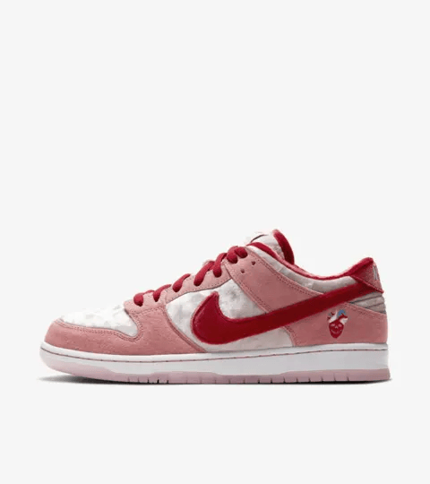
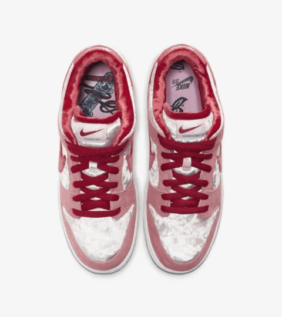
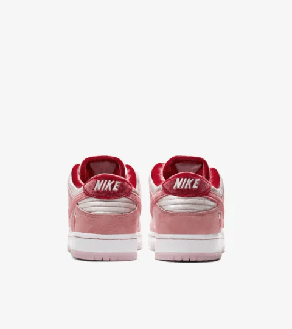

The Nike SB Dunk Strangelove is a distinctive sneaker that captures the essence of creativity and individuality in the world of skateboarding and streetwear. Released in 2020, this sneaker is a collaboration between Nike and the artist Sean Cliver, known for his unique and playful aesthetic. The Strangelove features a vibrant color palette that includes shades of red, pink, and white, accented by graphic elements that evoke a sense of whimsy and nostalgia.
One of the standout features of the Strangelove is its premium construction, utilizing high-quality materials like soft suede and leather for both style and comfort. The upper showcases a striking mix of colors, with the pink and red tones reminiscent of a Valentine’s Day theme, which complements the love-centric design motifs. The sneaker also includes a unique heart-shaped graphic on the tongue and playful details that reflect Cliver's artistic style.
The Nike SB Dunk Strangelove not only excels in aesthetics but also in performance. The classic SB Dunk silhouette is designed with skaters in mind, offering a padded collar and Zoom Air cushioning that provide support and comfort for long sessions on the board. This balance between style and functionality makes the Strangelove a popular choice among both skaters and sneaker collectors.
Upon its release, the Strangelove quickly gained a cult following, fueled by its limited availability and unique design. It stands out as a symbol of the intersection between art and sneaker culture, celebrating the creativity that defines both realms. The sneaker embodies a playful spirit, inviting wearers to express their personality through their footwear.
In conclusion, the Nike SB Dunk Strangelove is more than just a sneaker; it represents a celebration of creativity, individuality, and the culture of skateboarding. Its bold design, premium materials, and connection to the art world make it a noteworthy addition to the iconic SB Dunk lineup, ensuring its place in the hearts of sneaker enthusiasts and collectors alike.
  